2005年06月07日
カレーは手で食べましょう
今日は夜はローカルのレストランへ。
タンドリーチキンやらカレーやら、何もかも辛い。
辛いのは苦手なんでちと辛(つら)い。
でも一つ収穫が。インド人に手で食べる方法を教わった。
適当に指でつかんで口に放り込むのではなく、親指以外の４本でシャベル状にしてとらえて、親指でツツーと口に押し込む感じ。なるほど、こうするとこぼれずしっかりと口に運べる。
インド人はみんな指で食べるのかと思ったがそうでもなかった。半分以上の人はスプーンで食べてる感じ。
不浄の手、左手もスプーンなどの食器を使う分には問題ないらしい。
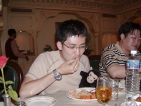
やっぱカレーは手で食べる！
投稿者 yusuke : 20:55 | コメント (0) | トラックバック
インドの水
インドに行く前誰もが言うのが「水に気をつけろ！」。
とにかく水道水を口にするとすぐ下痢になるらしい。
で、需要があれば供給がいっぱいあるわけで、なんとコカコーラやペプシもミネラルウォーターを作ってるみたい。
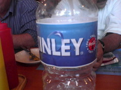
コカコーラのミネラルウォーター
投稿者 yusuke : 20:50 | コメント (0) | トラックバック
インドへ出発
今日は移動日。目的地のバンガロールは直行便がないのでバンコク経由となる。
初めてのタイ航空、初めてのバンコク、そしてもちろん初めてのインドと初物づくしになる予定。
飛行機は成田を11:00発、6時間半かけてバンコクに15:30着。途中「今日は富士山がよく見えます」とか機内アナウンスがあったけど、座ってるのとは逆サイドで見えず、ふてくされて（？）ほとんど寝てた。
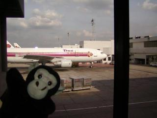
バンコク到着。タイ航空の飛行機だらけ
{kind=link}
バンコクについたはいいが、バンガロール行きの便は19:20発で4時間近く時間がある。
みやげ物屋をぶらっとみて15分、ベンチに座ってボーっとして10分。はて、何をしようか？仕事？
そこで目に飛び込んだのが「FOOT MASSAGE 足マッサージ」。おぉ、タイといえばマッサージだ。
足のマッサージだと、ストレッチといっしょにやるタイ独自のマッサージとは違うかもしれないけどやってみよう。1時間で1000バーツ。$26相当くらいらしい。高いか安いかはわからないけど、日本の金銭感覚では安い。フットマッサージという触れ込みだけど2人がかりで足と肩を同時にほぐしてくれてなかなか気持ちよかった。日本語も英語も通じないけど、なんとなくコミュニケーションできた。帰りもバンコクで足止め食らう予定なので来ようかな。
足も肩もすっきりしたところで搭乗ゲートへ移動。軽く小腹が空いたので売店でちっちゃい肉まんみたいなのとポテトチップス、コーラを買った。クレジットカードは使えないけれども米ドルは使えた。どういう計算をしたのかわからないけど5ドル。肉まんみたいなのは肉まんだった。ふつうにおいしい。
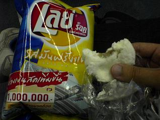
タイのポテチとプチまん
暇なのでポテチの袋を見ると、フリトレーとか、Lay'sのブランドはペプシの商標であることがわかった。食べ物も作ってたのか。知らなかった。
さて、搭乗のタイミングで偶然にも北京オフィス勤務のTony(中国人)にばったり出会った。そういえばバンコクで７時間またされると言ってたな。4時間でもかなりつらかったけど、7時間はつらすぎ・・・かわいそうに。
バンガロール行きの便は結構気流が悪く、飲み物がぴょこぴょこ飛びそうになってた。空港へはお迎えが来てたのでらくらくホテルへ。成田とちがって結構街中に空港があるので楽。10分くらいでホテルへついてしまった。大体22:30くらい。日本時間で01:00。家をでたのが6:45だから18時間くらいかかったことになる。遠かったなー。
投稿者 yusuke : 03:42 | コメント (0) | トラックバック
2005年06月05日
インドへGo!
仕事で同僚とインドへ行くことになった。バンガロールってとこへ。
地理にはめっぽう弱いけども、バンガロール(Bangalore-バンガロァって聞こえる)ってどこだ？
聞くところによるとIT企業が集まったとこで、いわばアメリカで言うシリコンバレー(サンノゼ)に相当するらしい。
南部の高原地帯、標高800mくらいでガンジス川は全然近くない。
インド通の人に聞いてみたら「バンガロール？何それ、何があるの？」と逆に聞かれてしまうくらい観光とは疎遠な場所みたい。
さて、準備をするにあたり温度はどんなものかとYahooの天気予報を調べてみれば・・・・バンガロールって載ってないじゃん。
しかも他の都市は40℃台後半が当たり前。インドの季節は３つある - hot, hotter and hottest だって聞くけどその通りみたい。そのかわり冷房が効いているところはとても寒いらしい。
http://weather.yahoo.co.jp/weather/world/indo.html
Dashboard のお天気ウィジェットでは調べられた。高原地帯なだけあって最高気温は30℃そこそこらしい。
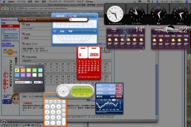
{kind=link}
まぁ、おいしいカレーをたべられれば良いかな。フライトの都合で半日くらい遊べそうなので、博物館、映画館に行くことを目標とする。
投稿者 yusuke : 01:17 | コメント (0) | トラックバック
2005年02月27日
Blue Man Group
を観た。
Blue Man Group はラス・ベガスの派手なホテルの中でもひときわ異様な雰囲気を放つピラミッド型のホテル、Luxor で行われているショー。
別の言い方をすれば数年前、そしてまた最近やってたインテルのコマーシャルに出ている無言で真っ青な人たちのショー。
http://www.intel.com/intel/promotions/unwire/ads.htm
てっきりコマーシャルだけのキャラクターかと思えばしっかりと腰を据えてやっている人たちらしい。
http://www.blueman.com/
ショーの内容は、なんともジャンルをつけがたいもの。CMでも披露していたプラスチックの下水管（？）を使ったパーカッションライブをしたり、照明や電光掲示板を効果的に使ってちょっとした目の錯覚で楽しませてくれたりと何が起こるか予測も付かない不思議なもの。
日本ではあんまり有名じゃないかもしれないけど結構お勧め。
http://www.blueman.com/videoimages/video/ifeellove_h.shtml
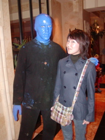
リーダーとパシャリ
投稿者 yusuke : 23:13 | コメント (0) | トラックバック
seafood buffe
今日はストリップからちょっと離れたところにある全室がスイートという豪華ホテル、Rioでシーフード。
いまだかつてないほどカニを食べまくった。
カキはイマイチ。
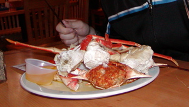
結局４皿くらいたべたカニ。ゲフッ
投稿者 yusuke : 23:07 | コメント (0) | トラックバック
え！？チケット手配してくれるんですか？しかもタダ？
ラスベガスで一番人気のあるショーはなんといってもCirque de SoleilのO(オー)。
Oはフランス語のeau(水)をもじっていて、巨大なプール？の上でなんとも壮大なショーをやってくれるらしい。
http://www.bellagio.com/pages/ent_main.asp
人気のショーだけあって、前日に確認したら完売状態。
ホテルのフロントなら別口でチケットがとれるんじゃないかと甘く見ていたが、やはり売り切れでとれないとのこと。
そんなこんなで今回Oはあきらめていたんだけれどもひょんな事からチャンスが舞い込んできた。
今日はちょっと妻と別行動をして一人で歩いていた・・・ところ、
おっさん:「今何時？」
白人の４，５０くらいのおっさんが話しかけてきた。
自分:「ん？えーと、２時っす」
おっさん:自分の腕時計を見て、うん、とうなずく。
え、時計もってるじゃん・・・・。あ、そうか、この国はタイムゾーンがいくつかあるから時計をもっていても時間を聞くことがあるのか。
おっさん：「どこから来たん？」
自分：「日本から」
おっさん：「おー日本！俺もちょうど１週間後に日本に行くんだよ！」
おっさんによると妻がハワイ出身の日系２世だとのこと。東京、名古屋、大阪と１ヶ月かけて旅行するらしい。優雅なもんだ。
仕事はスロットマシンのエンジニアで、偶然にも我々が泊まっているニューヨークニューヨークホテルでスーパーバイザーをしている、とか言う。
スロットマシンのエンジニア・・・・さすがラスベガスだ。
成り行きでOのチケットがとれなかったことを話すと、そんなの余裕、俺が手配してやる、と。
自分：「いや、でも売り切れだってよ」
おっさん：「こういうのは各ホテルで身内のゲスト用に余分のチケットがあんだよ。」
あーなるほど。そりゃそうだね。早速おっさんが電話をかける
おっさん：「オー、俺だ、アレックスだ。ちょっと頼みがあるんだけど、Oのチケット手配してくれないかな・・・・うん、今日の・・・PM10:30〜のチケットしかない？」
自分：「あ、遅めの方がいいっす。むしろ。 早めの時間だと Blue Man Group のショーがかぶるんで」
おっさん：「あ、遅めので大丈夫だって。・・・・・名前は・・」
自分：「YUSUKE」
おっさん：「YUSUKEだ、・・・んん、あぁ、まぁ俺の友達みたいなもん(kind of my old friend)だよ。えと、ファーストネームはァ・・・？」
自分：「いや、ファーストネームがYUSUKEで、ファミリーネームはYAMAMOTO」
おっさん：「で、YAMAMOTO」
おぃ、ファーストネームYAMAMOTOになってないか？まぁいいか・・・。
おっさん：「よし、とれたぞ。ほんじゃチケットとりにいこうか」
自分：「まじっすかー！悪いなーどうお礼して良いのやら・・・」
おっさん：「いいってことよ、そのかわり旅行に備えて日本のおいしいレストラン教えてくれ」
自分：「あーオケ、オケ。いくらでも教えてあげるよ。」
なんかいやにウマすぎる話だけれども特に妙な要求されたり、カード番号をいきなりきかれたりしたわけではないので様子を見ながらホイホイついていくことに。
というわけで作戦会議にマクドナルドへ。（おっさん仕事はいいのか？）
適当にレストランの名前、場所、地図とかでっちあげてあげた。
おっさん：「悪いな。お、そうだ、礼と言っちゃなんだがいいスロットの台教えてやるよ」
なるほど、パチンコみたいに出やすい台、出にくい台とかあるんだー。
しっかしちょっと怪しいけど・・・おっさんが特別儲ける、自分が損する話じゃないから今のとこ大丈夫そうかな・・・。
自分：「え、マジで？」
おっさん：「あぁ、でも当たったらすぐにやめろ。ジャックポットが当たる台なんてさすがにわからないから、たいした儲けにはならないはず。続けてやってもすぐ損する。あと、出なくても文句言うなよ？絶対に出る事なんて保証できないから。」
自分：「あぁ、もちろん。もともとそんなギャンブルしに来てる訳じゃないし。・・・でも引くまでにどれくらい投資することになるの？」
おっさん：「ちょっとまて・・・えーと」
といってなにやら設定が載っているマトリックスみたいなのとにらめっこしながらメモ帳で計算をする。
おっさん：「$5betする台で、毎回3つbetしながら３３回リールを回せ。それででなかったらあきらめろ」
自分：「$5x3x33 =・・・・・えーっと、大金だね・・・・・（汗）。無理無理。」
おっさん：「バカ、でも当たれば$5000くらい出るぞ。今の設定なら」
おっさん：「よし、それじゃ俺が掛け金半分貸してやる。当たったら俺の貸した分は返してくれればいいから、残りは全部くれてやるぞ。いい話だろ。よし、足りない分だせ。」
え？？？今？？？？あなたに？？？？？？？出すんですか？？？？？？
ちょっと気づくの遅かった。おっさん詐欺師でした。
遠慮してそそくさと退散。
結局Oのチケットも手に入らなかった（たぶんその話もでっち上げだと思う）けれども２時間ほどにわたる英会話と、初めての詐欺師との触れ合いということでむしろ有意義だった。
旅先でウマい話にホイホイ乗るのは危険、なのは重々承知している。
けれども、ちょっとくらいのトラブルは金を出してでも・・・とまでは言わないけれどもいい経験になる。
一応以下のことを常に気をつけながらおっさんの対応をしていた。
・人気（ひとけ）のないところへついて行かない
->着ぐるみはがされるかもしれない
・ウマい話に対して相手、自分がそれぞれどんな得、損をする可能性があるのか
->一見ウマい話も結局損することになるかもしれない。パスポート、クレジットカード、現金、住所、電話番号といった順で渡してはいけない。
・話に矛盾がないか
->相手はプロだからなかなか見抜くのは難しい
今回の場合は現金をその場で渡すよう要求するなんてあんまりなオチだった。
それに「出やすい台」はもしかしたらあるかもしれないけれども、どういったタイミングでいくら賭ければ、いくら当たる、みたいな情報を従業員がわかるはずない。
十分にブラックボックスになるよう州法かなんかで定められているはず。合法的な賭博上なのに身内の情報で儲ける方法があるわけないでしょう。
投稿者 yusuke : 21:37 | コメント (0) | トラックバック
2005年02月26日
サーカス・サーカス〜マンマミーア
リビエラを後にして次に行ったのはサーカス・サーカスというホテル。リビエラの目の前にある文字通りサーカスをテーマにしたホテル。
欧米のちょっとレトロな移動サーカス/遊園地にあるようなゲームがあり、ダークマンでリーアム・ニーソンが遊園地でマジギレするあの最高のシーンを思い出した。
「線はまたいでねーーよーーーーーーーー！」
ここは３０分置きに簡単なサーカスショーが観られたり、アドベンチャードームという巨大な屋内遊園地があったりと子供と来るにもよさげな場所。21歳未満はカジノで遊べないので実際家族連れはみんなここに一度は立ち寄るのではないだろうか。かなり混雑している。
サーカス・サーカスの後は妻のリクエストで予約しておいたマンダレイ・ベイホテルのミュージカル。劇団四季もやってる（やってた？）マンマ・ミーアというやつ。
舞台は簡素なリゾートホテル。オーナーでもある母親に女手ひとつで育てられたソフィーという娘が主人公。
父親がどんな人であるかどうか、また父親の消息についてなど聞かされておらず父親に会いたい一心ちから母の古い日記を盗み見てしまう。実は明日はソフィーの結婚式で、父親候補と考えられる３人を勝手に招待したことからドタバタが始まる、というような話。
ミュージカルは、以前家族旅行でニューヨークにてcatsを観たけれどもストーリーを全く理解できていなかった。
今回は50〜60%くらい理解できたかな？まだまだ精進、精進。
ABBAの曲がメインで会場全体ノリノリ。最高だった。
http://www.mamma-mia.com/
夜はシーフードレストランでロブスターを食べようと試みるも１時間半待ちということで遠慮しておく。ごてごてと味付けされたホットドッグとチーズがたっぷりのったフレンチフライを食して満腹。軽くスロットで$3ほど遊んで部屋へ戻る。
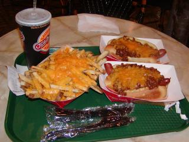
チーズコテコテのチリドッグ
{kind=link}
シャワーを浴びていると誰だか部屋を尋ねてきた。ホテルの方で、階下で水漏れしているけどバスタブから水を溢れさせたりしていないかと聞かれる。
水を張って浸かっていたものの溢れさせてはいない。一応確認してもらい、帰って頂いた。修理のために部屋の移動/アップグレードなどをオファーしてくれないかと淡い期待を抱くもそんなウマイ話はなく消灯。
投稿者 yusuke : 22:43 | コメント (2) | トラックバック
ラスベガス着〜Vegas Shoot見学
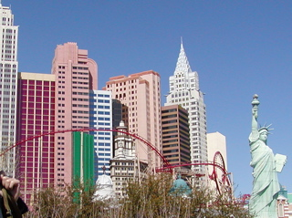
今回泊まったNew York-New York Hotel&Casino;
ラスベガスに着いたらまずはストリップの各テーマホテルをざっと散策。前回の旅行で一通り見ているけれどもたぶんこれは何度来ても楽しいもの。
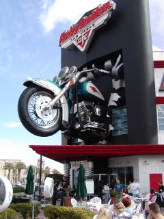
ハーレーをテーマにしたカフェ
{kind=link}
日本では考えられない規模にやはり驚かされる。散歩の目的地はリビエラホテル。6km以上に及ぶストリップを南から北までほぼ縦断したことになる。
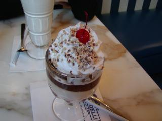
サンフランシスコ名物Ghirardelliのパフェをなぜかラスベガスで食す
{kind=link}
リビエラは最近流行のテーマホテルと違って結構老舗のホテルでこれといった見所があるわけじゃない。今日ここにきたのはベガス・シュートというアーチェリー大会をやっているから。
ホテルのコンベンションセンターを貸し切ってかなり大規模な試合を行っていて感銘をうける。
日本でも晴海の倉庫や東京ビッグサイトを借りてやっていた東京インドアオープンも近年（阪神大震災以降）はちょっと下火で駒沢の体育館止まり。昨年のオリンピック熱の続きで今年は盛り上がると良いんだけれども・・・。
試合会場ではメーカーの直販ブースもいろいろと出店されていて大変活気がある。この国はどんなスポーツでもそれなりの市場規模があるもんだと関心、感心。
試合会場では日本のプロショップでいつもお世話になっている方にお会いした。来ているのは知っていたので偶然ではないんだけれども、遠く離れた土地で知り合いに合うのはうれしいものだ。
せっかくだからそのうち手を付けるだろうコンパウンドボウ用のリリーサーを調達してしまおうと思い立ち、無難なモデルを教えて貰い購入することに。
旅先はちょっとサイフの紐が緩い。
{kind=link}
投稿者 yusuke : 20:43 | コメント (0) | トラックバック
2005年02月25日
ベガスへ！
今週末はラスベガスへ妻と小旅行。
ラスベガスは今回で二度目になる。前回行ったのは二年半前で、一人旅だった（！）。
こんなクレイジーな町は独りよりも盛り上がるだろうと期待。
飛行機、ホテルの予約はオンラインで。
飛行機は妻の薦めでまず www.yahoo.com を確認。どの航空会社でも値段はほとんど同じだけれどもサイトによって手数料が異なる可能性はあるだろうといくつかのサイトを確認してみた。
３つ位比較したところ結局のところ yahoo が $10 で一番安かった。
ホテルはディスカウントホテル予約サイトみたいのを確認したけれどもホテルの本家サイトが一番安かった。
#予約したのは New York New York
投稿者 yusuke : 20:27 | コメント (0) | トラックバック
2004年12月20日
サンフランシスコ到着
ビザなしで長期滞在ということで入国審査がちょっと心配だったけど難なく通過。
旅行？ビジネス？
->ビジネス
いつ帰るの?
->三ヶ月滞在で3月出国
チケットみせて
->はい
左手、右手の順に人差し指（index finger?)の指紋とらせて
->はい
さらに顔写真をLogicoolのカメラみたいなのでとられた。あまり良い気分ではない。
投稿者 yusuke : 17:59 | コメント (1) | トラックバック
チェックイン＆ビジネスクラス！
ノースウェストは第一ターミナル。
チェックインカウンターに行く際にはもちろんX線検査が。アーチェリーはとても物騒な雰囲気を醸し出している。
検査担当の方は一瞬眉をひそめてから「アーチェリー/弓ですか？」と一言。さすが慣れている。中身を開けて検査することなく通過。
チェックインカウンターの説明をみると、荷物は30kgまで、と。あれれ？ Web の説明より少ない。
しかも33.5kgとか表示されるし！
でもとくにおとがめなく通過。ちょっとやそっとでは追加料金とられないということでしょうか。
今回の出張は３ヶ月とちょっと長めなので行きはゆったりビジネスクラスにしてもらった。
たぶん生まれて初めて（？）のビジネスクラス。
・離陸前に飲み物が出る
。乾いてない刺身が出る
・シートが電動。横向きにも寝られる
などとしきりに感心。
でも貧乏性なのかエコノミークラスでちっちゃくなって寝るのも好きかも。
プライベートスクリーンはちゃんと写ってたけどもみんなから見える大きめのスクリーンが壊れてた。
なぜか Linux のブート画面で固まっている。Tux は空も飛ぶ。
「このフライトのために！」買ったPSP は結局遊ばず本を読んで寝た。
投稿者 yusuke : 17:52 | コメント (0) | トラックバック
2004年12月18日
荷物を詰め込む
またまたサンフランシスコへ出張。今年は出張の当たり年で４回目。
ミュンヘンx1、サンノゼx1、サンフランシスコx2。
今回はちょっと長めで３ヶ月なので準備は万端に！
前回の出張で持ち物はメモしていたのでちょっと準備は楽。blogにメモしていると google で検索できるのが良い。
今回はさらに弓も持っていく。荷物検査にひっかからないと良いけども・・。
重量制限について調べてみると荷物は 32kg まで、とのこと。体重計をつかって量ったら33kgくらいだった・・・。
なんとかダイエットして31.5kg くらいに抑えた。帰りは奥様と一緒に帰国するのでおみやげも買えるでしょう。
http://www.nwa.com/jp/jp/travel/tips/baggage.html
投稿者 yusuke : 23:41 | コメント (1) | トラックバック
2004年09月18日
It's Friday night!
今日は開発部門にいる Simon と Irish Bank というパブでギネスを一杯。
金曜はみんなすでに週末気分で夕方５時と早い時間なのに飲みまくっていた。
その後は Farallon というシーフードレストランへ。
CitySearch というサイトで２００３年のサンフランシスコのレストラン第４位に選ばれている。
またもや牡蛎と、フォアグラと"何か"のメニューを注文。
なんとフォアグラが入ったまま鳥がでてくる料理でなかなか美味。
そしてまたもや映画館へ。Sky Captain and the World of Tomorrow を見たかったけども公開初日で混雑してそうなので Cellular を見た。
電話を使った仕掛けは面白いけどいまいち新しさに欠ける、っていうかだいぶ寝てしまった。
以前訪れたことのあるサンタモニカのビーチがでてきた。いかにもカリフォルニアって感じで綺麗。ここサンフランシスコはいかにもサンフランシスコって感じ。
投稿者 yusuke : 17:26 | コメント (0) | トラックバック
2004年09月17日
ナイトクラブで一杯
今日は Harry Denton's Starlight room というナイトクラブで夕飯。
泊まっているホテルの最上階-21階にあるんだけど、サンフランシスコのナイトクラブでナンバーワンに選ばれたところらしい。
素晴らしい夜景を見ながらカクテル、牡蛎を堪能。
サンフランシスコ最高！
http://www.harrydenton.com/
投稿者 yusuke : 15:52 | コメント (0) | トラックバック
2004年09月14日
寿司
夜は John Green に寿司に連れて行ってもらう。海外で食べた寿司のなかでは一番うまかった。
寿司の後はすぐ近所のバーでアメフト観戦。ジントニックを頼んだらえらくきつかった。
アメフトのルールを半分くらい説明してもらい、さらにその半分くらいを理解した。John はフィラデルフィア出身で Eagles というチームのファンらしい。来週の月曜日は Eagles 戦があるそうだ。
アメフトの後は野球をちょっとみた。なんと選手とファンの乱闘騒ぎがあり20分近く試合が中断した。選手がファンにイスを投げつけてた。無茶苦茶だ。かなり珍しいことらしい。
http://sports.yahoo.com/mlb/recap?gid=240913111
イスを投げた選手は逮捕されたらしい。当たり前か。
http://sports.yahoo.com/mlb/news;_ylc=X3oDMTBpcDBuM2RlBF9TAzk1ODYxNzc3BHNlYwN0aA--?slug=ap-rangers-fanfight&prov=ap&type=lgns
投稿者 yusuke : 02:00 | コメント (3) | トラックバック
2004年09月13日
サンフランシスコォ
２ヶ月ぶりくらいのサンフランシスコ。
今回はレンタカーはしないので電車で市まで行く。Kenny が迎えに来てくれたのでスムースに乗れた。
時差ぼけで結構ねむたかったけど寝てしまうと翌日つらいのでケーブルカーミュージアムまで散歩したりなどしながらまったり過ごした。
夜は近所のスーパーで買い出しをして Kenny 邸でピザパーティー。オーブンは初めて使うというが、結構まともに焼けてよかった。味は普通。
投稿者 yusuke : 01:41 | コメント (0) | トラックバック
2004年09月12日
Go to San Francisco!
同僚が急病のため急遽３週間ほど出張することに。最近プライベートでバタバタしてる時期なのでちょっと大変！
いや、でもなんにしろ年末に３ヶ月ほど出張することは決まっていたので下見期間としてピッタリだ！？ ありがとう&まってるぜ、Danny&Ako;!
もってくものリスト
・ないと出張できない
パスポート、航空券、国際免許証(今回は車使わないけど一応)
現金$300ほど(基本的にクレジットカード払いなのでチップ＆緊急用)
・IT関連
PC/Mac、ACアダプタ、マウス（仕事に必要）
デジカメ、メモリカードリーダ、うまうま（出張/旅行時の基本）
充電器、充電池
携帯電話、充電器
・薬、サプリメント
バファリン、パブロン（そうそう体調崩さないと思うけど）、オロナイン(最近お気に入り)
Ni/Kuan（出張中もしっかりトレーニングしないとね）
・生活用品
カミソリ、耳かき、爪切り、歯磨き(アメリカのホテルは置いてありませんね)
整髪料(アメリカはなんか種類少ないよね)
・飛行機用品
スリッパ（あるとリラックス）、耳栓（あると安眠）、空気まくら（姿勢が決めやすくなる！）
・娯楽
DVDごっそり(ホテル、アパートではDVD観ながら仕事♪)、iPod
・服
Tシャツ/下着/靴下x3、長袖ジャージx1(足りなければ現地調達)
投稿者 yusuke : 00:20 | コメント (1) | トラックバック
2004年07月19日
ヨセミテ公園
今日はヨセミテ公園に行った。
ガイドブックによるとサンフランシスコからは320km、所要時間は５時間ほどとのことでかなり無理な日程になりそうで断念しかけたけど決行。
朝6:00に出発して公園ゲートに10:30頃到着。公園は東京都の1.5倍ほどと広大なのでゲートからさらに散策スポットの中心まで30分ほどかかり11:00にやっと駐車。
主な観光スポットをバスやレンタルサイクルを利用して一通り堪能し20:00ごろサンフランシスコに戻る。結構なんとかなるものです。
http://homepage.mac.com/yusuke/2004/0718/
エル・キャピタン
とにかくでかい岩の壁。もともと巨大な岩の岩盤だったのをマーセド川が長い時間をかけて浸食してできたらしい。
ハリウッドでスターを集めてプレミア上映する映画館も同じ名前だったかな？
ヨセミテ滝
高低差は世界第２位という滝。今は水量がすくなくほどほどの迫力だった。
ハーフドーム
でっかい岩が氷河で浸食され、さらに割れてしまった物らしい。とにかくでかい。ありえない位でかい。
ミラー・レイク
冬季には水がたまって湖になり、ハーフドームを写して綺麗になるらしい。今の時期はただのでかい水たまり。
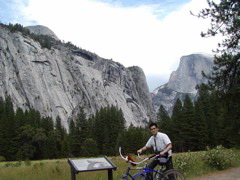
ノースドーム(左上)
でかい岩のこぶ。
投稿者 yusuke : 17:58 | コメント (0) | トラックバック
2004年07月18日
サンフランシスコ
に到着。
さっそくこちらに常駐している同僚に電話をかけよう。スーツケースに携帯電話が入っているんだけども鍵が壊れていて開かない・・・・。やっぱ安物はだめか？
無理矢理開けて携帯をとりだしたら今度は "your cell phone could no t be validated" とか言われて使えない。
この携帯は前回旅行した際に買った Virgin 製の携帯電話で出発前に Web でアクティべートしたはずなんだけど・・・。
とりあえず公衆電話で到着を伝えた。
レンタカーの窓口にはおびただしい人が並んでいてびっくり。いままで観光offシーズンにしか来たことがなかったのかもしれない。ここで人が並んでいるのはみたことないのに・・・。なんとか Heartz で手続きを終えてホテルへ。
ホテルは無線LAN完備でインターネット接続は快適(ちょっと遅いけど)。
携帯電話は３ヶ月以上使ってないと電話番号がリリースされてしまうため、しばらくぶりにアクティべートしたときはちょっとした設定が必要なことがわかった。プリペイドで20$くらいで使えるのでレンタル携帯より超お得。Virgin最高!
シャワーを浴びてさっぱりした後は同僚とぶらっとゴールデンゲートブリッジに行って、フィッシャーマンズワーフでロブスターを食べて、アパートに押しかけた。
http://homepage.mac.com/yusuke/2004/0717/
投稿者 yusuke : 16:12 | コメント (0) | トラックバック
2004年05月07日
Sa¨chsische Schweiz
今日はドレスデン観光。
朝9:30発の観光バスに乗って市内を1時間半かけて一回り。市場やら教会やら趣のある場所を巡ることができた。
バスツアーの後はミュンヘンでの散歩用にローラーブレードを調達。自分も店員もいまいち英語ができずとまどったけどなんとか買うことができた。
午後はドレスデンで一番うまいというケバブ屋へ連れて行ってもらった。屋台ではなく、ちゃんとした店舗になっているところで、ちょっとしょっぱいけどうまかった。日本でもケバブ専門のお店があっても良いなーと思った。
夕方は Sa¨chsische Schweiz(ザクセン州のスイスの意)へドライブ。海のワーゲンでぶっとばしてもらいましたが、すいません、行きと帰り結構寝てました。何がスイスなのかはわからないけどすごいとこ。日本人にとってスイスってアルプスの少女ハイジ的なものですが、もっといろいろとあるんでしょう。断崖の上につくられた要塞みたいのがあってものすごい場所。ちょと日本にはありえない風景ばかりで網膜がくすぐったかった。
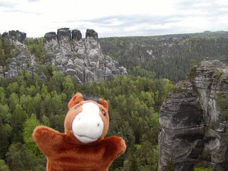
いわゆる絶景というやつ
{kind=link}
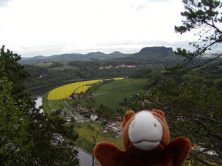
エルベ川と菜の花畑
{kind=link}
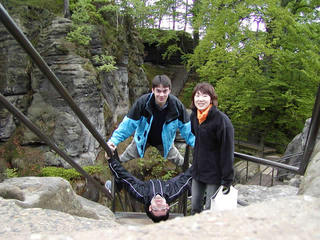
お馬鹿2人
{kind=link}
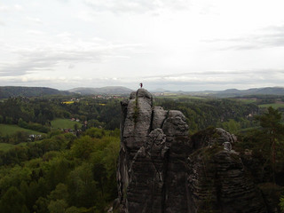
すごいとこに立ってる人がいる
{kind=link}
投稿者 yusuke : 23:02 | コメント (0) | トラックバック
2004年05月06日
ドレスデンへ
今日はドレスデンへ移動。
ICE ではなく IC。特急みたいなものでしょうか。
混んでないから迷惑ではないが、女性が座席を２つ占領してものすごい格好で寝ている。
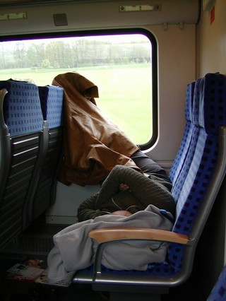
とてつもない姿勢
{kind=link}
ドレスデンは旧東ドイツにあたるとこ。なんだか町のどこへいっても工事をしている。駅舎を全面改装しているようで、簡単な囲いはあるものの瓦礫がどかどか並んでいる。日本では工事中の建物って覆いをして見えなくしてるのでなんだか不思議なかんじ。
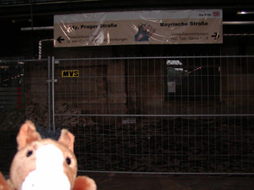
瓦礫の山
{kind=link}
海外で見かけるクレーンはみんな直角だ。つまり鉄塔のてっぺんで人が操縦していて、腕は水平に伸びている。見下ろして操縦するから作業はしやすそうだけど、操縦席まで行くのは怖いだろう。人通りがあるところの上でも平気でクレーンが動いているのは日本では考えられない。日本だったらクレーンの作業範囲は必ず立ち入り禁止にするでしょう。
ドレスデンには教会でも宮殿でもやたらとスケールのでかい建物が多い。２次大戦以降復旧したものや、まだ作業中のもある。
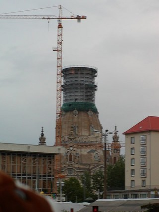
復旧中の教会と直角のクレーン。最近鐘を取り付けたけど音の響きが悪くて作り直したとか。復旧費用を確保するための宝くじとかがある。
{kind=link}

Swinger 宮殿。めちゃめちゃでかくて博物館とかもある。全部みたら一日じゃすまないでしょう。
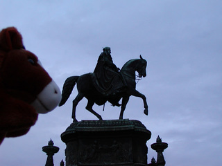
たぶん兄弟
{kind=link}
夜は通訳様の友達、海(カイ)と落ち合って泊まらせてもらった。アパートの５階だけどエレベータがないので足腰を鍛えられるし、かなりゆったりした間取りで光熱費込みで300ユーロくらいとかなりお値ごろ。彼は大学に通っていてここに住んでいるのだが、旧東は過疎化が進んでいて安いそうだ。日本では存在だけで有名になりそうな廃墟が街中のいたるところにある。直しても住む人がいないとか。いい町だと思うけど、雇用機会が少なくて悪いスパイラルに陥ってるらしい。
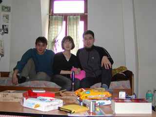
海の部屋で
{kind=link}
投稿者 yusuke : 22:42 | コメント (0) | トラックバック
2004年05月05日
DB Museum
今日は一日ニュルンベルクを散策。
まずは鉄道博物館-DB museum へ・・・・。これが大変なボリューム。ざっと見るだけでも4時間ほどかかった。あたりまえかもしれないけど秋葉原にある交通博物館とちょっと似てる。車輪の歴史から鉄道、トンネル工事の基本などが展示されている。英語の説明はまったくなく全部ドイツ語。今回は専属の通訳がついていたから良いものの、外国人相手の展示ではないのだろうか。
ドイツって街中にもぜんぜん英語の表示がないのだがなぜでしょう？
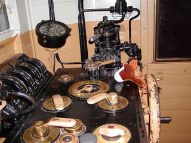
うまうま運転
{kind=link}
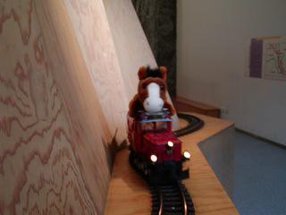
うまうま運転その２(要QuickTime)
ウィンドウショッピングを軽くして食事したらもう夜だ。
今日泊まるホテルは Drei Raben(3羽の烏) という洒落たところ。
#英語は Ravenだけど ドイツ語は Raben
その名の通り烏がモチーフになっていてホテル内のあちこちにいる。
面白いのでぱしゃぱしゃ写真を撮りまくった。。
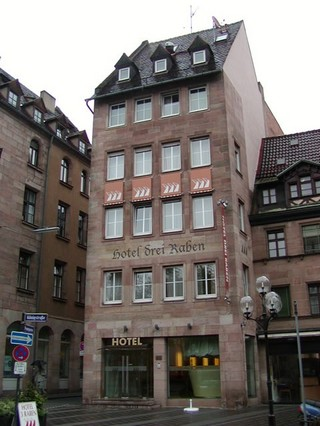
Drei Raben 外観
{kind=link}
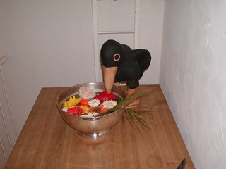
水を飲んでる烏
{kind=link}
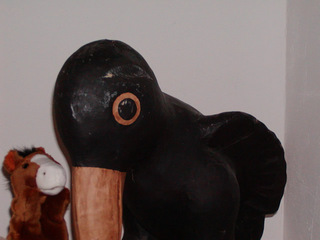
環境ホルモンの影響で巨大化した烏
{kind=link}
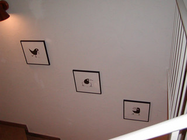
環境ホルモンの影響で平たくなった烏
{kind=link}

部屋にはやけにリアルなのが３羽
投稿者 yusuke : 22:20 | コメント (0) | トラックバック
2004年05月04日
ニュルンベルクへ
今日はDBの新幹線-ICBでニュルンベルクへ。
ミュンヘンからニュルンベルクは2時間ほど。車両はかなりモダンで車両間をつなぐ扉はガラスの自動ドアになっている。かっこいい。最高時速は250km/hで新幹線よりは遅い。横揺れが結構強くてまっすぐ歩くのはむずかしい。そこらへんの電車より揺れの少ない新幹線の技術がいかに優れているか実感した。
座席は左右に２つづつ、1列に４席ある。パソコンをいじりたい人に重要なのが電源。新幹線だと限られた座席(車両の先頭のほう？)にだけ特殊なソケットがあるらしいけど、ICBは驚いたことに全ての座席(の間＝2座席に1つ)にコンセントがついている。しかもコンセントの形は家庭用のものと同じ形なのでかなりお手軽に利用できるのがうれしい。今回は2時間しか乗らないのでいちいちパソコン広げるほど暇をもてあますことはなかったけどもせっかくなので繋げてみた。
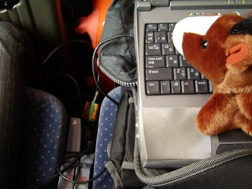
ICEで電気を調達
{kind=link}
ニュルンベルクをざっと散策してみた。ミュンヘンよりも人通りが少なく落ち着いた感じ。車の通らない人間専用の道というか広場のような場所が多いのでちょっとテーマパークみたいな印象を受ける。いや、テーマパークがこういうところの雰囲気を真似ているんだろうけど。
市場ではふさで繋がったトマトを見る。別に日本にあってもおかしくないけど初めてみてちょっと感動。
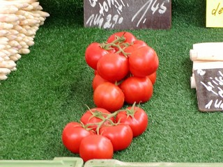
ふさで売ってるトマト。日本でこうして売ってるのは見たことない
{kind=link}
街を歩きつづけると坂が見えてきて、その先にカイザーブルクっていうお城がある。観光する、ということと登る、というのはかなり意味が近いらしく観光中はあちこちで登る。登る。登る。カイザーブルクを登ると街を一望できてかなり気持ちが良かった。
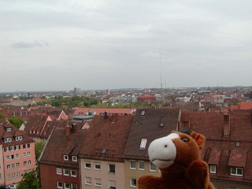
カイザーブルクからの眺め。やはりビルはない
{kind=link}
そういえば日本人を見かけない。ゴールデンウィークだというのに。ヨーロッパといえばみなさんパリに行ってしまうんだろうか。ミュンヘンにもいなかったなぁ・・・。
だいぶ歩いて疲れてホテルへ。さてインターネットに繋げようか・・・・つながらない。iPassはクラッシュするし(たぶん最新バージョンにアップデートしてないのが悪い)、プロバイダのローミングサービスもなんだかうまくいかない。困った困った。
なんとなくワイヤレスLANのカードを繋げてみるとなんとアクセスポイントがあるではないですか！！！！
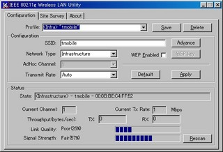
アクセスポイント発見！
{kind=link}
やったね。近所の人かホテルに泊まってるだれかのがもれてるんでしょうか、こっそりつながるとうれしいな・・・と思ってブラウザを開いてみると強制的に t-mobile ってサイトへジャンプ！どうやらホットスポットサービスらしい。1時間8ユーロ、3時間18ユーロとかで決して安くはないけどもダイヤルアップでがっちり接続するよりは安いので3時間だけ契約してみました。結果的にはブロードバンド(1〜10Mbps程度)で接続できたので良しとする。

t-mobile ホットスポットサービス
ちなみにこのサービスの Web ページ、Strutsベースで作成されているみたい。どのページを見ても .do .do .do .do .do。
投稿者 yusuke : 23:02 | コメント (1) | トラックバック
2004年05月03日
ミュンヘン観光
今日は一日ミュンヘン観光。
今夜泊まるホテルをまず確保してから街中へくりだす。
右も左もわからない状態なので市内をぐるっと回ってくれる観光バスに乗ってみた。多カ国語のオーディオ解説付きで1時間。日本語の解説は日本人がしゃべったらしいまともな発音なんだけども映画のことをキノと言ったり、ところどころ訳すべきところがカタカナドイツ語になってておかしかった。ちなみに英語の解説は随分なまってた。
街のあちらこちらにヒトラーの面影が残っているみたいだけども、ぱっと見は綺麗な観光＆ビジネス都市だ。
困ったことにこの国は有料のトイレが多い。新宿にあるそれのように綺麗に清掃されていてそれなりの価値を見出せるトイレなら良いが、特別綺麗でもないトイレが60〜120セントくらいする。お金は自動扉に直接コインを入れるところや、おばさんにわたすとこがある。以前香港かどこかで見た有料トイレではおばさんがいらないのにてを拭くためのタオルをわたしてくれたのだが、今回のおばさんはぼけっとしている。おばさんはタオルをわたしてくれるのでもなく、掃除をしているのでもない。いや、掃除はし終わったつもりなんでしょう。お金とるからには綺麗にしてください。
結構トイレが近いほうなので有料トイレはとてもつらい。
ミュンヘンにはいくつか教会があり、ペーター教会とか、塔に登れる場所がある。なかなか綺麗なながめだ。見通しはとてもよくかなり郊外まで高いビルがないことがわかる。京都みたいに高さ制限みたいのがあるんでしょう。
教会の作りは結構古めかしくて全体的な形はフランスでみたものとにてるんだけども細かいところはちょっと大雑把な感じがする。たぶんゴシックだとかルネサンスだとか様式が違うのだろう。あとフランスの古めの建物の外壁にはかならずガーゴイルがいるけれども、ここでは人の形をしたオブジェがある。
建物の外壁とか屋根に人とか動物とかを配置するのってかなり突拍子もないアイディアだと思うけど日本にも中国にもヨーロッパにもある。最初にはじめたのは誰なんでしょう？
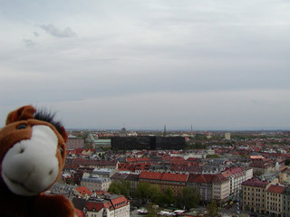
教会からのすばらしい眺め
{kind=link}
街中には人と車用の道のほかに自転車用の道がある。自転車が人をひきそうになったり、歩行者に合わせてのろのろ運転をしたりしなくて良いのでとても安全で効率が良い。そもそも歩道自体かなり広いところが多いので人にぶつかる心配も少ないけど。街全体、ゆとりのある作りになっている。国土の面積は日本の95%とということだけども平野が広いのでしょう。フランスもそうだけど、車庫証明みたいなのは必要なく路上駐車もやりたい放題(もちろん駐車禁止の場所はある)。
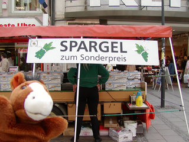
街のあちこちで売っている旬の Spargel(ホワイトアスパラガス)
{kind=link}
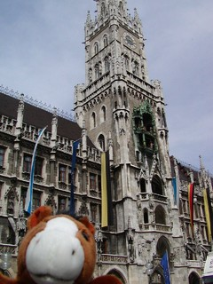
からくり時計が有名な市庁舎
{kind=link}
夜は有名らしいビアホール-ホーフブロイハウスへ。うまいビールにうまいソーセージを堪能した。ビールは基本的に1リットルでてくる。下戸の自分にはとても飲みきれない。
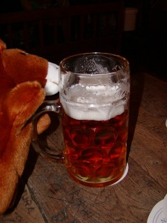
１リットル！
{kind=link}

ユアン・マクレガー似の(?)ウエイター
飲み終わってホテルへ戻る途中インラインスケートの群集を見た。道路を封鎖して滑っていて恐らく１万〜２万人くらいいるだろうか？ Inline night というイベントらしい。恐らくフランスに次いでインラインスケートが流行っている国だ。
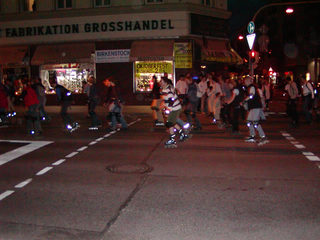
通り過ぎるまで３０分くらいはかかるインライン集団
{kind=link}
投稿者 yusuke : 23:18 | コメント (1) | トラックバック
2004年05月02日
ミュンヘン到着
無事ミュンヘン国際空港についたのは午後5:30くらい。
ひとまず予約してあるホテルのあるHauptbahnhof駅へ電車で移動。S8という路線を使った。HauptはCentral、bahnhofはStationの意。Hauptbahnhofは文字通り各路線のターミナルとなる駅で各都市に存在するらしい。
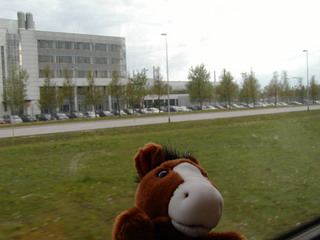
DB(Deutsche Bahn-ドイツ鉄道)のS8という路線にて。
DBは東西ドイツが統合した際に国鉄を統合して民営化したもの
{kind=link}
電車で移動途中、ちょっと雲行きが怪しかったんだけどついたら大雨。しかも5mm〜1cmくらいの大粒のあられがどかどか落ちてくる危険な状態。さすがにあられがずっと降ってるわけもないのでしばらく駅舎でまったりしてからホテルへ向かった。
ホテルは高級ではないが落ち着いた雰囲気で良い。King's Hotel という所であちらこちらが王冠をモチーフにしたオブジェやロゴで飾られている。
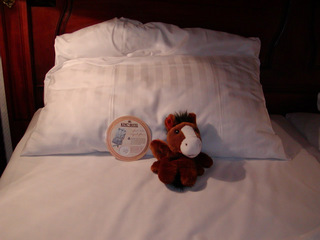
ようやく到着
{kind=link}
一休みするともう夜8時くらいなので濡れた靴下を履き替えて腹ごしらえすることにした。やはりソーセージでしょう、ということで駅(ホテルからは200mくらい)へ戻っての売店みたいなとこでかぶりついた。なかなかうまい。そもそもまずいソーセージってあんまりないけどね。
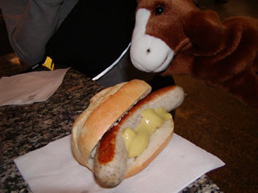
マスタードつけすぎだよ、おっさん
{kind=link}
そんなこんなでそこそこ夜だ。メールチェックをしよう・・・・・あれ・・？iPass(ダイヤルアップソフト)がハングアップする・・。繋げられません。インターネット中毒の体にはかなりコタエマス。おやすみなさい
投稿者 yusuke : 16:22 | コメント (2) | トラックバック
成田-ミュンヘン
最近の情勢もありセキュリティチェックに時間がかかるから空港には普段より30分早く来いとテレビでやっている。
12:45発の飛行機だが、一応9:30に空港についた。結局チェックインや出国手続きはたいしたことなく結構時間をもてあましたが、マックフライポテトのLでしのいだ。
飛行機は大変わくわくするもので機内食、iPod、昼寝などを楽しみながらあっという間にミュンヘンに到着。
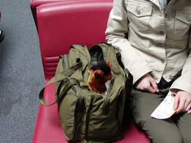
今回のお供はうまうま。ちんぱんはお留守番。
{kind=link}
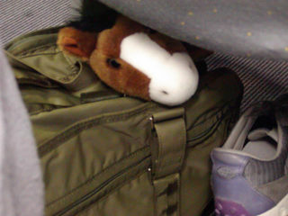
かばんに忍び込み搭乗成功
{kind=link}
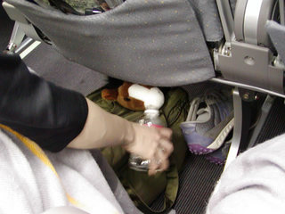
密航なので機内食食べられず水でしのぐうまうま
{kind=link}
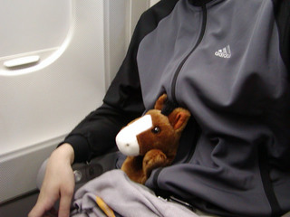
密航なのにずいぶんリラックス
{kind=link}
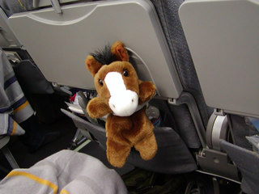
ここが定位置に
{kind=link}
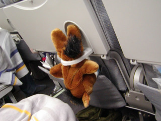
添乗員に見つかりお仕置き
{kind=link}
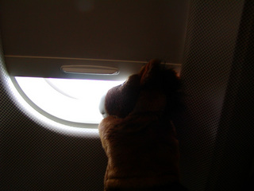
もうすぐつくかな？
{kind=link}
投稿者 yusuke : 06:03 | コメント (1) | トラックバック
準備万端？
ただの旅行なら適当にパソコンをもっていくだけなのだが、今回は出張ということもありインターネット接続環境の確保に気をつけた。
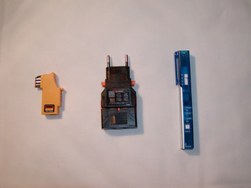
左から順に
・モデムのアダプタ
ドイツは電話のコネクタの形が違うらしい。大抵のホテルならそのままでいけると思うけど、念のためにアダプタを。
・コンセントのアダプタ
ドイツはコンセントの形が違う。また電源は240Vなので国内専用のACアダプタには変圧器が必要。
Dellのノートはもちろん海外対応なので形だけを変換するやつにした。
・モデムセーバ
雷サージ機能と、電圧チェック機能などがあるやつ。いままで海外でも気にせずごちょっとつなげていたけども、電圧が違っていてモデムを壊してしまうことなどがあるらしい。これで回線をチェックしたり、配線をクロスさせたりなどして確実にモデムをつなげることができる。
{kind=link}
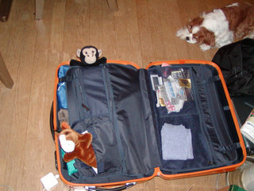
とりあえず準備万端？
{kind=link}